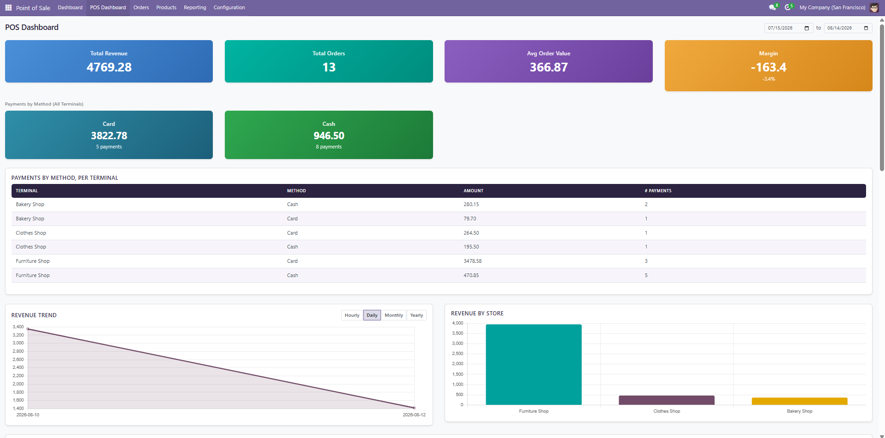
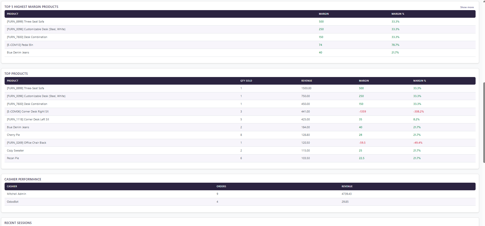
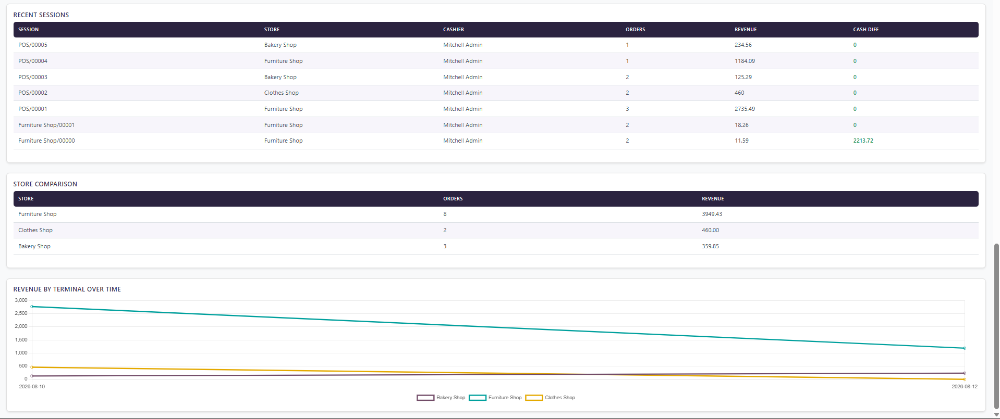

POS Dashboard Pro
A complete analytics dashboard for your Point of Sale — revenue, margins, cashier performance, and multi-store comparison in one screen.
MULTI-STORE
Terminal Comparison
PROFITABILITY
Margin Tracking

Summary tiles, payment breakdown by method and terminal, and switchable revenue trend charts
Why POS Dashboard Pro?
Odoo's default POS reporting is scattered across several menus, and answering a simple question — "which store had
the best day?" or "which products are actually making us money, not just selling the most?" — usually means
exporting data and building your own spreadsheet. POS Dashboard Pro puts everything on a single screen, computed
live from your existing POS data. No configuration, no separate reporting module to learn, no waiting for
end-of-day exports.
- Spot problems same-day, not at month-end — a store underperforming or a cash drawer discrepancy shows up the moment you open the dashboard, not after your accountant reviews the books.
- Know your real profit, not just your revenue — margin is calculated per product and per period, so your best-seller and your most-profitable item are no longer assumed to be the same thing.
- Manage multiple stores without switching screens — every chart and table is store-aware, so a multi-location retailer can compare terminals side by side instead of opening each POS session individually.
- Coach cashiers with real numbers — per-cashier order counts and revenue make performance conversations concrete instead of anecdotal.
- Zero setup — install and the dashboard is immediately populated from your existing POS history. No data migration, no new fields to fill in.
Key Features
- Summary tiles — total revenue, orders, average order value, and margin at a glance
- Payment breakdown — amounts by payment method, merged across terminals, plus a per-terminal detail table so you always know your cash vs. card split by location
- Revenue trend charts — switch instantly between Hourly, Daily, Monthly, and Yearly views
- Revenue by Store — compare performance across every POS location in one chart
- Revenue by Terminal Over Time — a multi-line trend so you can see which store is pulling ahead over the selected period
- Top Products — ranked by revenue, with margin and margin % shown per product
- Top Highest-Margin Products — instantly spot your most profitable items, expandable beyond the default top 5
- Cashier Performance — orders and revenue per cashier
- Recent Sessions — per-session revenue, order counts, and cash differences, with problem sessions flagged in red
- Store Comparison — orders and revenue side by side across every location
- Custom date range filter — apply any period across the entire dashboard in one action

Top highest-margin products, full product breakdown, and cashier performance — profit and loss is color-coded so it reads at a glance

Recent sessions with cash differences, store comparison, and revenue-by-terminal trend lines for multi-location tracking
Getting Started
- Install POS Dashboard Pro from the Apps menu.
- Go to Point of Sale → POS Dashboard in the top navigation bar.
- Use the date range fields in the top-right corner to set the period you want to analyze.
- Use the Hourly / Daily / Monthly / Yearly buttons above the Revenue Trend chart to change the time granularity.
- Click Show more above the Top Highest Margin Products table to expand beyond the default top 5.
- Scroll down for Top Products, Cashier Performance, Recent Sessions, Store Comparison, and Revenue by Terminal Over Time.
No additional configuration is required — the dashboard reads directly from your existing Point of Sale orders, sessions, and payments.
Compatibility
Works with both Odoo Community and Odoo Enterprise. No additional dependencies beyond standard Point of Sale.
Support
Questions or feature requests? Email us at support@paulasystems.org — we're happy to help.